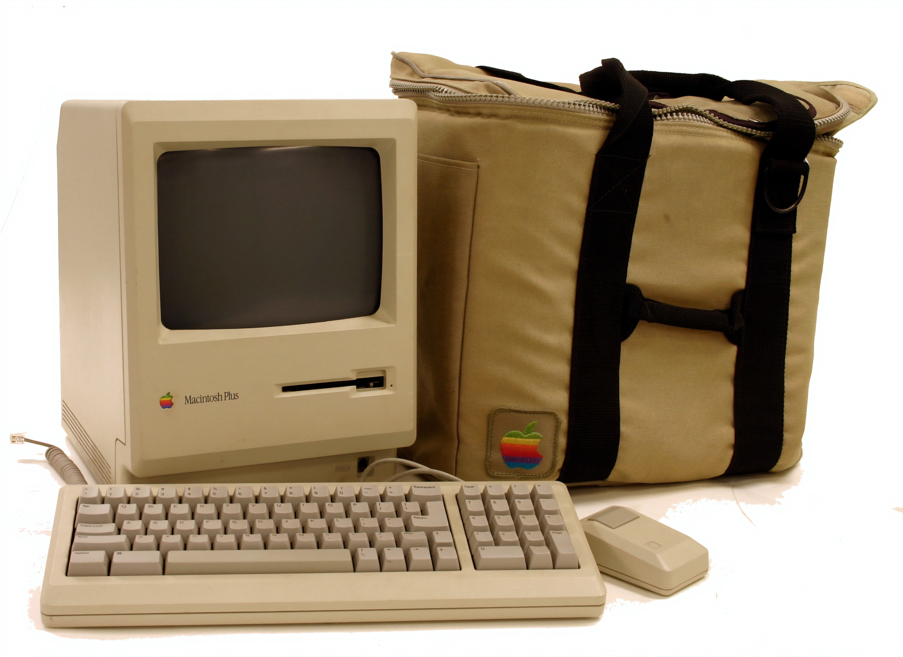

PyCharm professional remote Ubuntu Bionic desktop setup for GPU usage in MacBook Pro 2020
In the last 1 month, I tried numerous times to configure my Macbook pro to utilize remote GPUs to train some Machine Learning models. There are many good articles about the same on the internet, but I found there are some very basic things, which nobody has mentioned
View More